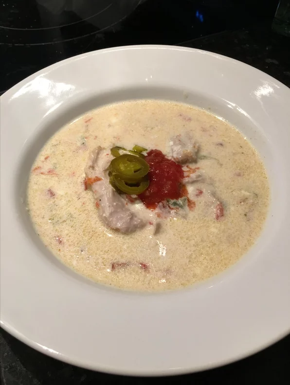

Creamy Keto Chicken-Poblano Soup

A tasty lookin' Keto friendly chicken-poblano soup recipe! Recipe Link.
Recipe logistics
- Prep: 10 mins
- Cook: 30 mins
- Additional: 10 mins
- Total: 50 mins
- Servings: 4
- Yield: 4 servings
Nutrition
- 397 Calories
- Protein: 23g
- Carbs: 6.5g
- Fat: 31.2g
- Cholesterol: 126.4mg
- Sodium: 546.9mg
Ingredients
- 4 skinless, boneless chicken thighs
- salt and ground black pepper to taste
- 10 ounces water
- 1 (10 ounce) can diced tomatoes with green chile peppers
- 1 poblano pepper, sliced
- ½ onion, diced
- 8 ounces cream cheese, softened
Steps
- Season chicken thighs liberally with salt and black pepper.
- Combine water, tomatoes, poblano pepper, and onion in a multi-functional pressure cooker (such as Instant Pot®). Add chicken. Close and lock the lid. Choose Meat setting and set the timer for 17 minutes. Allow 10 to 15 minutes for pressure to build.
- Release pressure using the natural-release method according to manufacturer's instructions for 5 minutes. Release remaining pressure carefully using the quick-release method according to manufacturer's instructions, about 5 minutes. Unlock and remove the lid.
- Remove chicken from the pot and shred. Add cream cheese to the soup in the pot and stir until mixed well. Return shredded chicken to the pot and mix well.